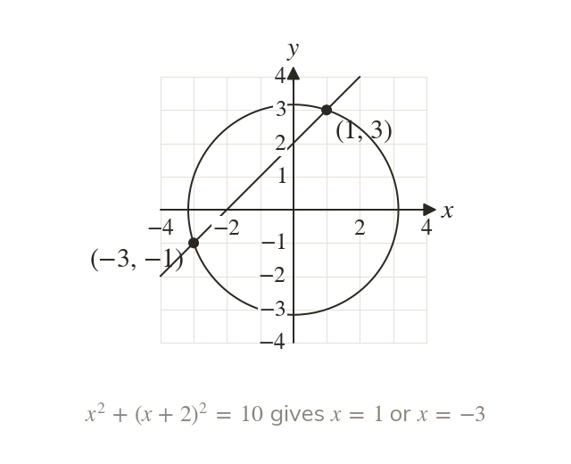
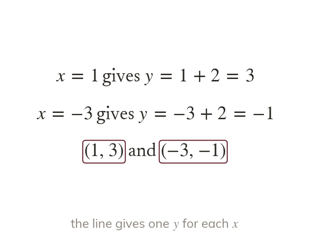
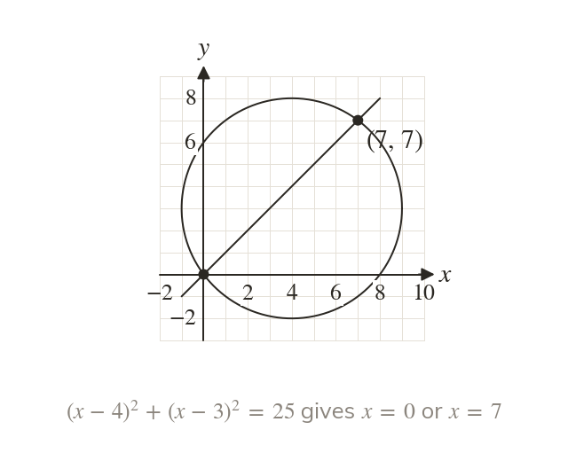
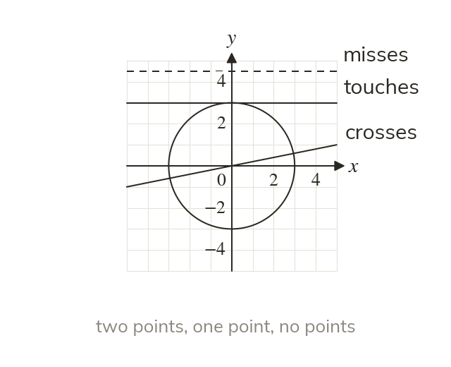
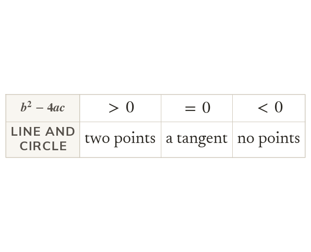
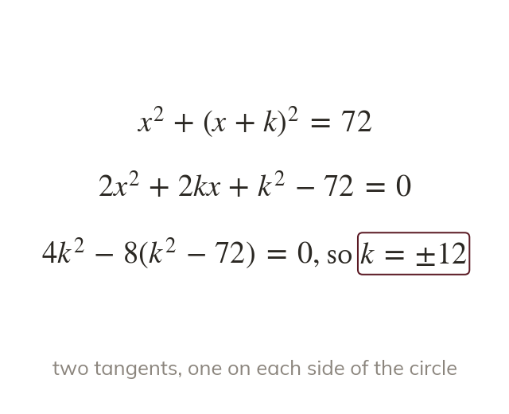

Substitute
Put the line into the circle to get one equation in x. Expand, collect and solve the quadratic.
A line can cross a circle twice, touch it once or miss it, and solving the two equations together tells you which. The next lesson uses the right angle between a radius and a tangent, and the perpendicular to a chord.
Work down the page at your own pace. Write every answer in your book first, then click to check it.
Read each card, then follow the worked examples one step at a time.

Put the line into the circle to get one equation in x. Expand, collect and solve the quadratic.

Each root gives one point. Put each x back into the line, not the circle, to find its y.

The method is the same for
Substitute the line into both brackets, then expand and collect.
Pick an answer. If it's wrong, the feedback tells you which mistake it was.
Write the blanks in your book first, then tap each one to check.
Read each card, then follow the worked examples one step at a time.

A line can cross a circle twice, touch it once or miss it. The quadratic from substituting has two roots, one repeated root or none.

For the quadratic from substituting, the sign of tells you how the line and circle meet. Zero means the line is a tangent.

For a line such as the discriminant is an expression in Setting it equal to zero gives the values of for a tangent.
Pick an answer. If it's wrong, the feedback tells you which mistake it was.
Write the blanks in your book first, then tap each one to check.
Finished? Next lesson: 6.4 Tangent and Chord Properties.
For each skill, tap the one that is true for you today. Your Revise pages start with anything you mark Not yet.
Your ratings are saved on this device only.
Log in, then search for a code to practise that skill.